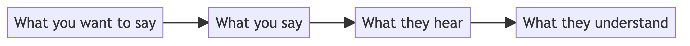

Communication for Developers
Estimates, code reviews, and other hard problems
Voytek Pituła
----
### Who am I?
----
### Shannon Communication Model

++++
### Communication goal
 _What you say_ and _What they hear_ don't matter in the end
++++
### Why this talk?
* Share a few tricks for everyday problems
* Increase awareness about communication
* Talk about effective communication principles
++++
### Practical part first
Principles later
----
##### Problem 1
## Estimates
++++
_What you say_ and _What they hear_ don't matter in the end
++++
### Why this talk?
* Share a few tricks for everyday problems
* Increase awareness about communication
* Talk about effective communication principles
++++
### Practical part first
Principles later
----
##### Problem 1
## Estimates
++++
Estimates
### Is this a communication concern?
Q: When will this be done?
A: In around a week
What they think you wanted to say: It will be in prod for all the users in 1 week
What you wanted to say: I will open a PR in 1 week
++++
Estimates
#### The most important question
> Why do you need it?
++++
Estimates
#### Reasons for providing estimates
* Promise to regulator
* Promise to users
* Internal planning
* Prioritization
* ...
* **None**
++++
Estimates
### The goal
Provide a number with the same meaning for both sides
++++
Estimates
### Size vs time
Story points vs days
It's a separate topic.
Size is better but has limited uses.
++++
Estimates
### What to explicitly mention
* Scope - what will be done
* Num of man-days - how much work-time it will take
* Uncertainty factor - how confident we are about the work
* Assumed dev availability - how much time a single dev can devote
* Assumed dev assignment - how many devs will work on this
* Final date - by what date we exepct the result
* End result - what will be delivered
* Word "estimate" - in opposition to commitment
++++
Estimates
### Example
 Real estimate of mine with small edits
----
##### Problem 2
## Pull requests: Author
Get your PRs reviewed
++++
Real estimate of mine with small edits
----
##### Problem 2
## Pull requests: Author
Get your PRs reviewed
++++
Pull requests: Author
### How not to ask for review
 ++++
++++
Pull requests: Author
### Find reviewers
Concrete people, groups work until they don't
As many as you need, but **not more**
++++
Pull requests: Author
### Put a deadline
Explicit date by which you want to merge
++++
Pull requests: Author
### Make it reviewer-friendly
++++
Pull requests: Author | Make it reviewer-friendly
## Make it small
Hehe
++++
Pull requests: Author | Make it reviewer-friendly
### When small is not an option
* description
* highlights
* remaining TODOs
++++
Pull requests: Author | Make it reviewer-friendly
### No force-push
⚔️ rebase vs merge ⚔️
Is this a communication concern?
 ----
##### Problem 3
## Pull requests: Reviewer
Give a good review
Don't make enemies
++++
----
##### Problem 3
## Pull requests: Reviewer
Give a good review
Don't make enemies
++++
Pull requests: Reviewer
### The LOGAF Scale
Level Of Give A Fuck
 There is no standard
++++
There is no standard
++++
Pull requests: Reviewer
### Don't be a jerk
* propose solutions (e.g. new names)
* offer help (e.g. pair programming)
* show empathy (e.g. no one wants to fix stuff ad infinitum)
* pick your battles (not every issue is important, perfect doesn't exist)
----
##### Problem 4
## During implementation
Code & work coordination
++++
During implementation
### Code comments
* Classic: why not what
* Humor is valuable
* It's a message into the future
++++
During implementation
### Leave breadcrumbs behind
Pieces of context that will help in future investigations
What?
- Slack links
- Jira links
- Stackoverflow links
Where?
- in Slack conversations
- in Jira issues
- in Gitlab PRs
- in comments
++++
During implementation
### Build in the open
You can never know who might be interested, who might be affected, and if it's not you who misses some context
We will talk about this more later
++++
During implementation: build in the open
### Keep people in the loop
If you're irreplaceable, you've failed at your job.
++++
During implementation
### Coordinating releases
It can be really complicated when multiple parties are involved.
Mobile, backend, marketing, legal, operations, etc.
release ≠ deployment
++++
During implementation: Coordinating releases
#### Thread & emojis can be enough
 ----
----